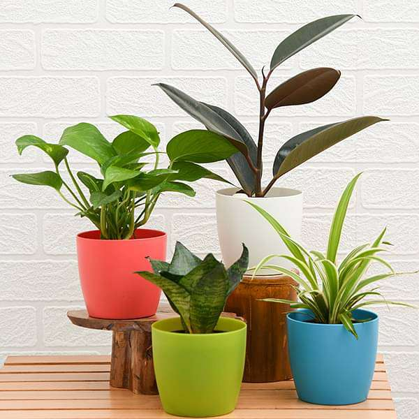

Sacred Plants
Sacred Plants Collection
₹999
About this item
A special collection of sacred and religious plants that hold cultural and spiritual significance. Perfect for creating a peaceful and divine atmosphere in your home or garden.
Package Includes:
- Sacred Basil (Tulsi) - Holy plant with spiritual significance
- Bilva (Bael) - Sacred to Lord Shiva
- Peepal Tree - Sacred fig tree
- Neem Tree - Sacred and medicinal properties